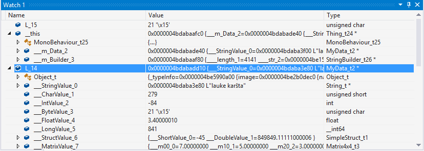
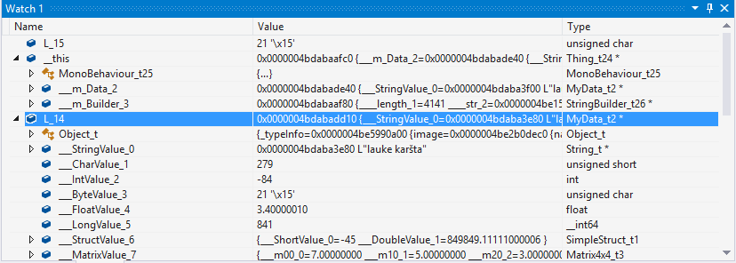

通用 Windows 平台：IL2CPP 脚本后端上的调试
Debugging C# code
To debug C# code with IL2CPP, enable Script Debugging in the Build Settings before building the Project, and enable the InternetClient, InternetClientServer and PrivateNetworkClientServer capabilities in the Player settings or the manifest. The manifest is not overwrriten when you build on top of a previous build, so if you want to change the capabilities, you need to do it from Visual Studio manifest editor.
The debugging procedure is the same as any other Unity platform. For more information, see Debugging C# code in Unity.
Debugging generated C++ code
In addition to debugging C# code, you can debug generated C++ code using Visual Studio.
生成的 C++ 代码中的类和方法命名
IL2CPP 类如下所示：<ClassName>_t#number，其中的 <ClassName> 是类的普通名称，而 #number 是唯一的类型编号。某些核心类型不存在 #number。例如：
String_t
Object_t
Type_t
Char_t34
StringBuilder_t26
GuidParser_t1539
IL2CPP 方法如下所示：<ClassName>_<MethodName>_m#number，其中的 <ClassName> 是声明类型的方法的普通类名，<MethodName> 是普通方法名称，而 #number 是唯一的方法编号。例如：
GuidParser_ParseHex_m10003
ConfigurationSection_DoDeserializeSection_m1275
String_Format_m4102
Mathf_Sqrt_m289
Thing_Start_m1
静态字段结构的命名如下所示：<ClassName>_t#number_StaticFields，其中结构名称的第一部分与声明类型相同，例如：
StringBuilder_t26_StaticFields
Thing_t24_StaticFields
此外，在每个类/方法定义上面都有一条 C++ 注释，指出完整的类/方法名称。例如：
// System.String
struct String_t : public Object_t
{
// System.Int32 System.String::length
int32_t _length_0;
// System.Char System.String::start_char
uint16_t _start_char_1;
};
// System.Text.StringBuilder
struct StringBuilder_t26 : public Object_t
{
// System.Int32 System.Text.StringBuilder::_length
int32_t length_1;
// System.String System.Text.StringBuilder::_str
String_t* str_2;
// System.String System.Text.StringBuilder::_cached_str
String_t* cached_str_3;
// System.Int32 System.Text.StringBuilder::_maxCapacity
int32_t maxCapacity_4;
};
// System.Void MyData::.ctor()
extern "C" void MyData_ctor_m0 (MyData_t2 * this, const MethodInfo* method)
{
...
}
// Thing
struct Thing_t24 : public MonoBehaviour_t25
{
// MyData Thing::m_Data
MyData_t2 * _m_Data_2;
// System.Text.StringBuilder Thing::m_Builder
StringBuilder_t26 * _m_Builder_3;
};
struct Thing_t24_StaticFields
{
// System.Int32 Thing::s_SomeStaticField
int32_t _s_SomeStaticField_4;
};
观察变量值
调试最重要的部分之一是观察各种变量的值。Visual Studio 允许将鼠标悬停在变量上以将变量添加到监视窗口中，从而通过相对容易的方式观察变量的值。例如：
 

观察静态字段有点困难。在 IL2CPP 中，静态字段存储在 Il2CppClass 实例本身上。因此，为了观察静态字段，我们首先需要一个指向该类型 Il2CppClass 结构的指针。这些指针位于使用它们的方法的作用域内，但在观察一次之后，指针将在应用程序运行期间保持在相同的内存地址。Il2CppClass 结构具有“static_fields”字段，该字段便是一个指针，指向包含该特定类型的静态字段的内存块。要查看实际值，必须将此指针强制转换为适当的静态字段结构：每种类型都有自己的字段。例如，我们来观察 Thing_t24 类的静态字段：

调查异常
IL2CPP 使用本机 C++ 异常来实现 .NET 异常。当应该抛出某种异常时，IL2CPP 将抛出 Il2CppExceptionWrapper 对象，其定义如下：
struct Il2CppExceptionWrapper
{
Il2CppException* ex;
Il2CppExceptionWrapper (Il2CppException* ex) : ex (ex) {}
};
可在监视窗口中轻松调查这些异常对象：

最后，对异常启用调试器中断，从而能够当场捕获异常的来源，这样可能有助于发现问题。为此，请在 Visual Studio 中按 CTRL+ALT+E，并确保在打开的窗口中选中了 C++ Exceptions 复选框：

启用此设置后，只要有异常抛出，Visual Studio 就会自动停止执行：

• 2018–10–18 Page amended with no editorial review
C# debugging for IL2CPP on Universal Windows Platform added in 2018.2 NewIn20182